Physics system
The physics simulation is available to be added to avatars via the Animaze Editor by using Colliders and Constraints. The simulation is done with the help of the open source physics simulation Bullet Physics SDK v2.83. What Bullet provides is a simulation world in which we can create rigid bodies and constrain them if needed, in order to achieve whatever dynamic effect we want for our character.
In the example below we are adding physics to a hat prop. Here is the flow to do that:
Colliders setup
-
Open AnimazeEditor and load the item
-
Unfold skeletal hierarchy
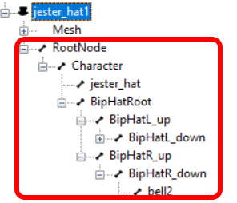
-
In order to start adding colliders, click on the pause button
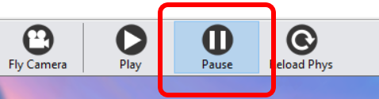
-
Right click on the parent node and choose Add new collider/Attach new sphere collider.
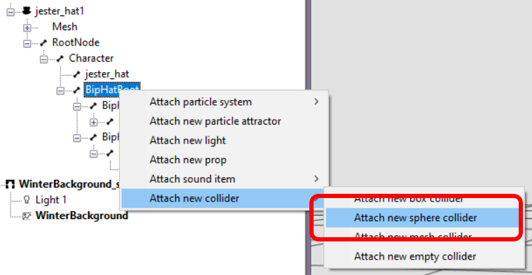
-
This collider is going to act as a parent for the other colliders, so its mass needs to be set on 0 (default mass is 1)
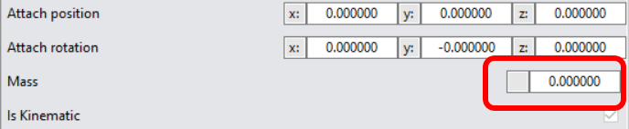
-
Uncheck the linear and angular motion check boxes, as this collider will not need the simulation to be applied on
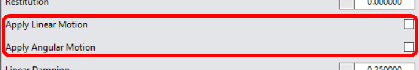
-
Continue the process by right clicking on the joints which need simulation and choose Add new collider/Attach new sphere collider.
-
In most of the cases, the colliders work fine with the default mass value. Depending on how you want the joints to be simulated, check the settings for Apply Linear and Angular Motion. Also tweak the Radius value, but this depends on the size of your object.
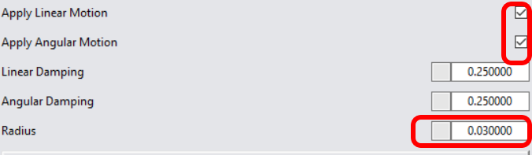
Tips
-
For a efficient workflow, we strongly to rename colliders appropriately
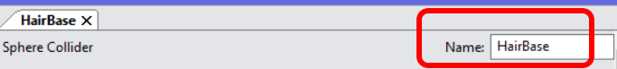
-
Once you deselect a collider, you will not be able to see it in the viewport. Press SHIFT + P to have the colliders displayed at all times. Draw Debug Info would also need to be selected
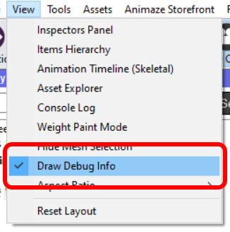
-
It’s way easier to work with a Gray diffuse/wireframed model and a light colored background
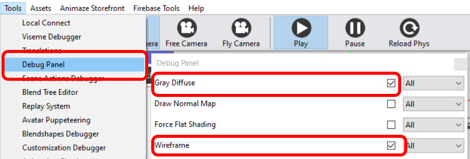
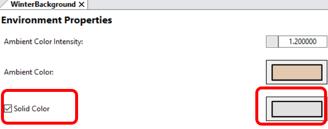
-
You can find all the colliders in the Attachments section of the object’s hierarchy
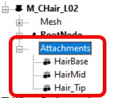
Constraints setup
-
To proceed with adding a constraint, select the collider which will act as a parent and scroll to the bottom of its attributes window, where the constraints section is. Leave Constraint type unchanged (Six DOF).
To select the other constraint, begin by clicking on the Select Collider button.
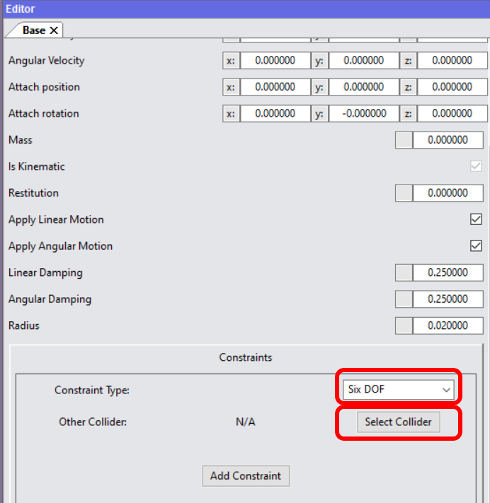
-
In the resulting pop-up window chose the collider you want to constrain and click Select button
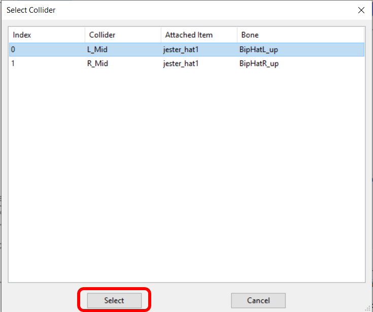
-
Back to the parent collider attribute window you will notice the selection is now made. Click on Add constraint to complete the process
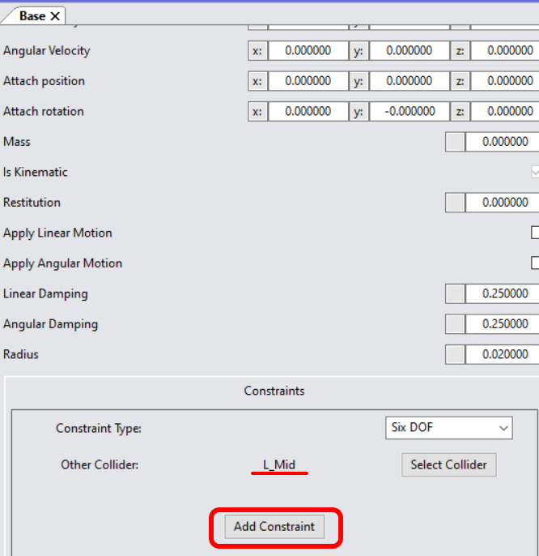
-
Once the constraint created, you will notice in the viewport a thin blue between the two colliders
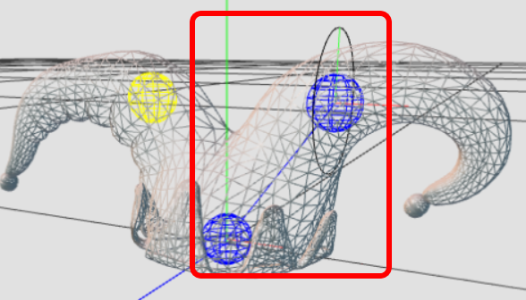
-
This will change to yellow when you hover over the constraint attributes window
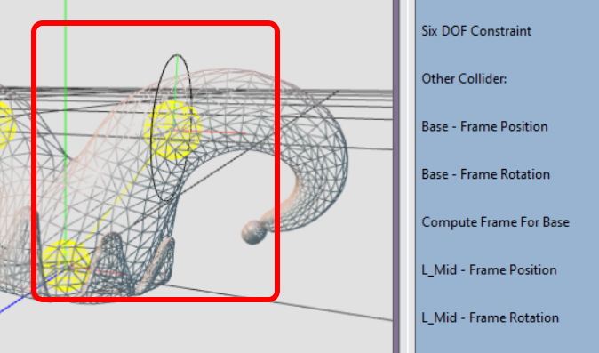
-
For the sake of simplicity, we are going to uncheck Spring Enabled Linear Axis (discussed at point 7 in Colliders setup section). For Spring Stiffness and Damping Angular Axis, a value of 10 respectively 0.1 is a good starting point. You can tweak this later on, depending on your needs.
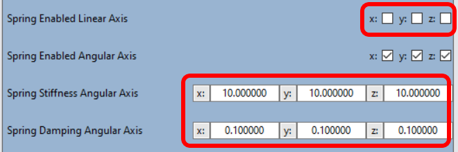
-
For the angular limit, start with a small value, for example 10 degrees. This means a lower limit of -5 and an upper limit of 5. Notice how by doing so the limits update in the viewport
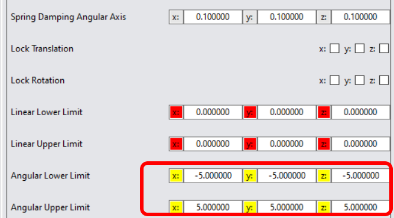
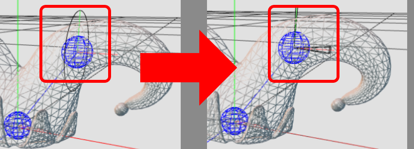
-
Now we need to move the pivot point of the parent to the center of the child collider
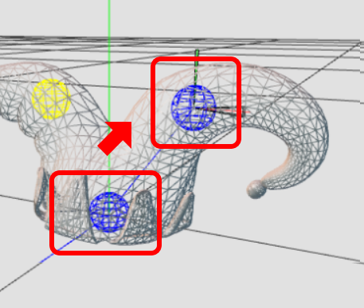
To do so, in the constraint attribute choose the child collider (in the parent frame position and rotation section) and click Apply
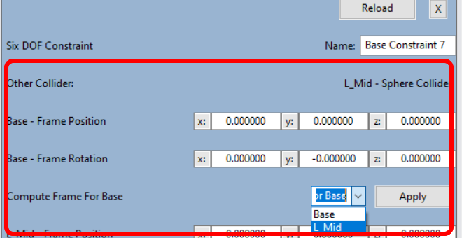
-
Notice the new values for the x, y and z attributes
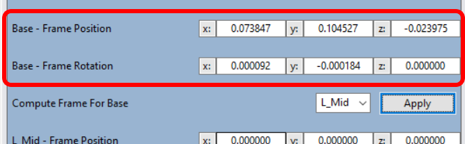
-
Now move the constraint on top of the child collider (Y axis):
10.1.. Select the child collider (L_Mid in this example)
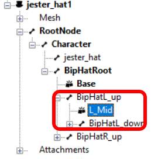
10.2. Tweak the Y coordinate value in the Frame Position attribute until you get the desired result.
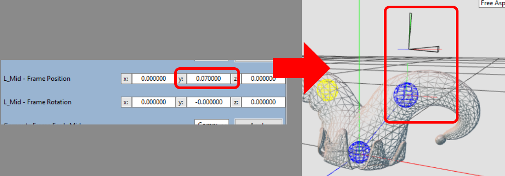
-
Last step for this example is to orient the constraint, to make it perpendicular to the grid:
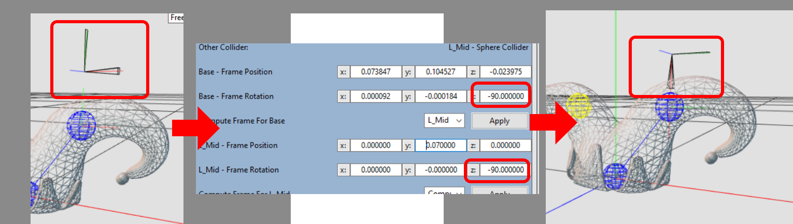